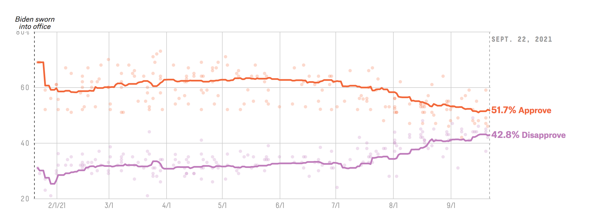
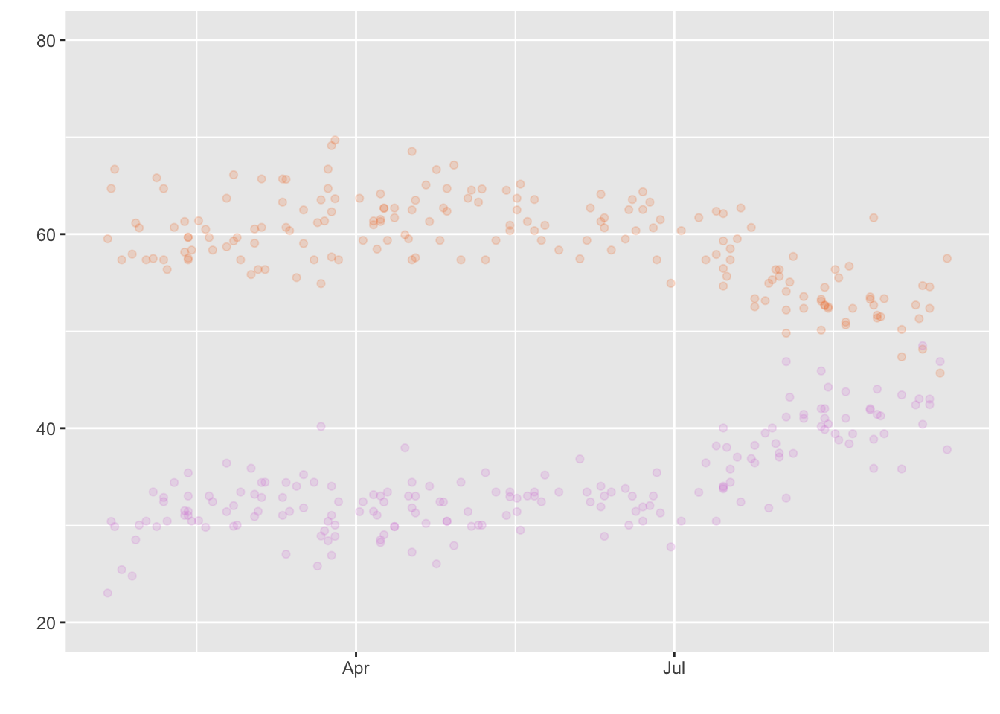
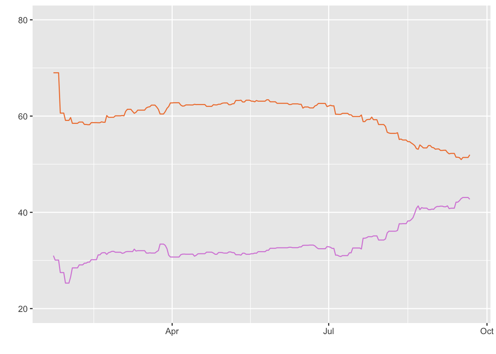
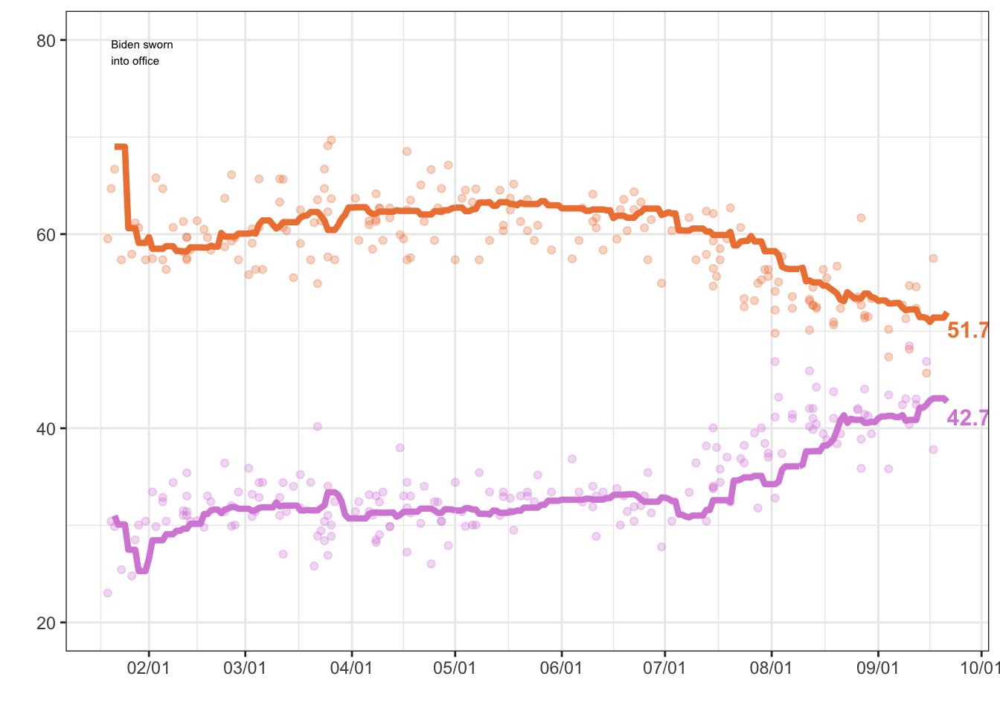

Visualization
How Americans View Biden’s Response To The Coronavirus Crisis
Here is the original article Here is the github repository
This is the table I am trying to replicate

Load packages
library(knitr) # to put this on my website
library(dplyr) ##
## Attaching package: 'dplyr'## The following objects are masked from 'package:stats':
##
## filter, lag## The following objects are masked from 'package:base':
##
## intersect, setdiff, setequal, unionlibrary(ggplot2)
library(here) #to define paths## here() starts at /Users/sophiadrewry/Documents/School/Fall 2021/MADA/SophiaPDrewry-MADA-Portfoliolibrary(lubridate) #to arrange date form of data##
## Attaching package: 'lubridate'## The following objects are masked from 'package:base':
##
## date, intersect, setdiff, unionLoad data
This data can be found on FiveThirtyEight’s github page. I used the adjusted verion Now lets load the data
dataspot1 <- here::here("data", "covid_approval_polls_adjusted.csv")
covid_approval_polls_adjusted <- read.csv(dataspot1)
# This dataset includes the approval and disapproval scores
dataspot2 <- here::here("data", "covid_approval_toplines.csv")
covid_approval_toplines <- read.csv(dataspot2)
# This data set is for the lineClean data
Lets get an overview of the data
str(covid_approval_polls_adjusted)## 'data.frame': 2782 obs. of 19 variables:
## $ subject : chr "Biden" "Biden" "Biden" "Biden" ...
## $ modeldate : chr "9/21/2021" "9/21/2021" "9/21/2021" "9/21/2021" ...
## $ party : chr "D" "D" "D" "D" ...
## $ startdate : chr "1/24/2021" "1/28/2021" "1/29/2021" "1/31/2021" ...
## $ enddate : chr "1/26/2021" "2/1/2021" "2/1/2021" "2/2/2021" ...
## $ pollster : chr "YouGov" "Quinnipiac University" "Morning Consult" "YouGov" ...
## $ grade : chr "B+" "A-" "B" "B+" ...
## $ samplesize : num 477 333 808 484 564 ...
## $ population : chr "a" "a" "rv" "a" ...
## $ weight : num 0.629 0.632 0.834 0.549 0.888 ...
## $ influence : num 0 0 0 0 0 0 0 0 0 0 ...
## $ multiversions : chr "" "" "" "" ...
## $ tracking : logi NA NA NA NA NA NA ...
## $ approve : num 84 93 89 88 89.2 ...
## $ disapprove : num 3 5 7 7 7.14 8 5 5 3 2 ...
## $ approve_adjusted : num 86.9 92 90.3 90.9 89.6 ...
## $ disapprove_adjusted: num 2.43 5.7 6.4 6.43 6.68 ...
## $ timestamp : chr "20:55:08 21 Sep 2021" "20:55:08 21 Sep 2021" "20:55:08 21 Sep 2021" "20:55:08 21 Sep 2021" ...
## $ url : chr "https://docs.cdn.yougov.com/ld46rgtdlz/econTabReport.pdf" "https://poll.qu.edu/national/release-detail?ReleaseID=3688" "https://assets.morningconsult.com/wp-uploads/2021/02/03074817/2101110_crosstabs_POLITICO_RVs_v1.pdf" "https://docs.cdn.yougov.com/460mactkmh/econTabReport.pdf" ...str(covid_approval_toplines)## 'data.frame': 3300 obs. of 6 variables:
## $ subject : chr "Trump" "Biden" "Trump" "Biden" ...
## $ modeldate : chr "9/21/2021" "9/21/2021" "9/21/2021" "9/21/2021" ...
## $ party : chr "all" "all" "R" "R" ...
## $ approve_estimate : num 38.9 52 76.8 19.5 35.9 ...
## $ disapprove_estimate: num 57 42.7 20 76.9 57.5 ...
## $ timestamp : chr "20:55:28 21 Sep 2021" "20:55:22 21 Sep 2021" "20:55:21 21 Sep 2021" "20:55:17 21 Sep 2021" ...Lets make the data more managable
biden <- covid_approval_polls_adjusted %>%
filter(subject %in% c("Biden")) %>%
filter(party %in% c("all")) %>%
select(startdate, approve_adjusted, disapprove_adjusted)Convert character into date format using lubridate package
# Well after an hour of running code that does not work, I figured out that the problem was that the date is not in "date" form
# headbang
# headbang
# headbang
biden$startdate <- mdy(biden$startdate) Now lets build out plot
# Hex code for colors are
# Orange = #EF813F
# Purple = #D78CDB
s1 <- ggplot() +
geom_point(data = biden, mapping=aes(x=startdate, y=approve_adjusted), alpha = 0.2, color = "#EF813F") +
geom_point(data = biden, mapping=aes(x=startdate, y=disapprove_adjusted), alpha = 0.2, color = "#D78CDB") +
xlab(" ") +
ylab(" ") + ylim(20, 80)
# No x or y axis titles because there are none in the model graph
print(s1)
Now to do a similar process with the line data
bidenline <- covid_approval_toplines %>%
filter(subject %in% c("Biden")) %>%
filter(party %in% c("all")) %>%
select(modeldate, approve_estimate, disapprove_estimate)
#Proper date format
bidenline$modeldate <- mdy(bidenline$modeldate) # Will not forget this again!
#Now for the plot
l1 = ggplot() +
geom_line(data = bidenline, aes(x = modeldate, y = approve_estimate), color = "#EF813F") +
geom_line(data = bidenline, aes(x = modeldate, y = disapprove_estimate), color = "#D78CDB") +
xlab(" ") +
ylab(" ") + ylim(20, 80)
print(l1)
Ok this is looking good. Now to combine both graphs
BigGraph = ggplot() +
geom_point(data = biden, mapping=aes(x=startdate, y=approve_adjusted), alpha = 0.3, color = "#EF813F") +
geom_point(data = biden, mapping=aes(x=startdate, y=disapprove_adjusted), alpha = 0.3, color = "#D78CDB") +
geom_line(data = bidenline, aes(x = modeldate, y = approve_estimate), color = "#EF813F", size = 1.5) +
geom_line(data = bidenline, aes(x = modeldate, y = disapprove_estimate), color = "#D78CDB", size = 1.5) +
xlab(" ") +
ylab(" ") + ylim(20, 80) +
scale_x_date( date_breaks = "1 month", date_labels = "%m/%d") +
theme_bw() +
annotate("text", x = as.Date("2021-01-21"), y = 80,
label = "Biden sworn \ninto office",
color = "black",
size = 2,
fontface = 1,
vjust = 1,
hjust = 0) +
annotate("text", x = as.Date("2021-09-21"), y = 42,
label = "42.7% Disapprove",
color = "#D78CDB",
size = 4,
fontface = 2,
vjust = 1,
hjust = 0) +
annotate("text", x = as.Date("2021-09-21"), y = 51,
label = "51.7% Approve",
color = "#EF813F",
size = 4,
fontface = 2,
vjust = 1,
hjust = 0)
print(BigGraph)
Lets compare to original graph
Now to add some theme elements
BigGraph2 = ggplot() +
geom_point(data = biden, mapping=aes(x=startdate, y=approve_adjusted), alpha = 0.3, color = "#EF813F") +
geom_point(data = biden, mapping=aes(x=startdate, y=disapprove_adjusted), alpha = 0.3, color = "#D78CDB") +
geom_line(data = bidenline, aes(x = modeldate, y = approve_estimate), color = "#EF813F", size = 1.5) +
geom_line(data = bidenline, aes(x = modeldate, y = disapprove_estimate), color = "#D78CDB", size = 1.5) +
xlab(" ") +
ylab(" ") + ylim(20, 80) +
theme_light (base_size=12, base_family="mono") +
theme(
panel.border = element_rect(color = "#D3D3D3"),
panel.grid.minor.x = element_blank(),
panel.grid.minor.y = element_blank(),
axis.line.y.left = element_line(color = "#D3D3D3", linetype = 2),
axis.line.y.right = element_line(color = "#D3D3D3", linetype = 2),
axis.text = element_text(colour = "#D3D3D3"),
axis.title = element_text(colour = "#D3D3D3"),
axis.ticks = element_line(colour = "#D3D3D3"),
aspect.ratio=2/6) +
scale_x_date( date_breaks = "1 month", date_labels = "%m/%d") +
annotate("text", x = as.Date("2021-01-21"), y = 80,
label = "Biden sworn \ninto office",
color = "black",
size = 2,
fontface = 1,
vjust = 1,
hjust = 0) +
annotate("text", x = as.Date("2021-09-21"), y = 42,
label = "42.7% Disapprove",
color = "#D78CDB",
size = 4,
fontface = 2,
vjust = 1,
hjust = 0) +
annotate("text", x = as.Date("2021-09-21"), y = 51,
label = "51.7% Approve",
color = "#EF813F",
size = 4,
fontface = 2,
vjust = 1,
hjust = 0)
print(BigGraph2)
Save all my hard work
figure_file = here::here("BigGraph2.png")
ggsave(filename = figure_file, plot=BigGraph2, dpi = 300) ## Saving 7 x 5 in image